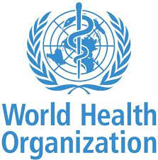

세계보건기구(世界保健機構), 약칭 WHO(World Health Organization)는 보건·위생 분야의 국제적인 협력을 위하여 설립된 유엔 체제 하의 정부 간 기관이다.
1946년에 설립이 허가되었으며 1948년 4월 7일에 정식으로 발족하였다. 세계보건기구가 정식으로 발족한 날은 매년 ‘세계 보건의 날’로 기념되고 있고, 대한민국도 이날을 '보건의 날'로 지정하였다. WHO는 크게 두 가지의 직무를 맡고 있다.

국내 기업 참여 `WHO 인력양성 교육` 2차도 실시한다
우리나라가 올해 초 WHO(세계보건기구) 글로벌 인력양성 허브로 선정된 후 국내 대표 제약바이오 기업들이 속속 교육에 참여하고 있다.
7일 제약바이오 업계에 따르면 보건복지부와 한국바이오협회는 WHO와의 글로벌 인력양성 협약에 따라 '백신·바이오의약품 품질관리 기본교육'을 받을 인원 300명을 모집한다. 이번 교육과정은 지난 7~8월 종료된 1차 교육(370명)에 이은 2차 교육으로, 10~11월에 실시된다.
지난 1차 교육에는 삼성바이오로직스, 셀트리온, SK바이오사이언스, GC녹십자 등이 참여했다. 삼성바이오로직스는 인천 송도 바이오의약품 생산공장의 공정 시설과 홍보관을 소개하고, 셀트리온은 주력 품목의 연구개발·생산 담당 직원들과의 소통 시간을 마련했다.
이번 2차 교육에는 한미약품도 합류한다. 한미약품은 7일 서울대와 WHO 글로벌 바이오 인력양성 허브 조성 관련 협약을 체결하고, 제약·바이오 인력양성과 R&D에 공조하기로 했다.
김진수 기자(kim89@dt.co.kr)